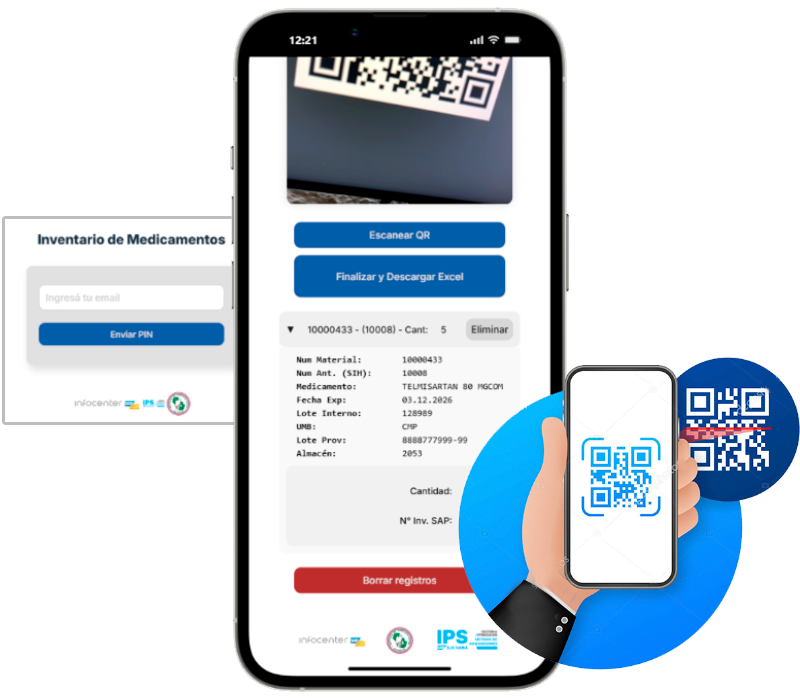

Infocenter — QR Medication App
Digital medication control with QR codes. Infocenter is a leading SAP company in Paraguay, with more than 45 years of experience and 180+ consultants driving digital transformation in public and private organisations.
They needed to improve how medical staff record the medications they use. I built a cross-platform app where doctors scan each medication’s QR code, record quantities and generate reports automatically — replacing manual registration for IPS.
How it works
- Sign in — staff enter their email and receive a PIN to log in (emails sent through Brevo).
- Scan — the camera reads the medication’s QR and shows material number, name, expiry date, internal and supplier batch, unit and warehouse.
- Record — set the quantity and keep scanning; each entry can be reviewed or deleted.
- Export — “Finish and download Excel” generates a file with date, time, quantity and product name for every record.
Built as a Service Worker + Manifest web app, it installs on any phone without going through an app store.

Login with email + PIN, and the scan / record screen
Challenges
- Defining requirements — constant adjustments to match how medical staff really work.
- QR scanning — reading tuned for different codes and packaging so every record is accurate.
- Secure users — balancing security and simplicity in the email + PIN flow.
- Dynamic reports — the Excel export needed a flexible, reliable data structure.
Results
Fewer manual errors and faster stock management in the health centres, confidential and traceable records thanks to PIN access, faster audits through automatic Excel exports, and an app that fit into the staff’s existing workflow. Time spent on manual medication records dropped by more than 30%.